大家好，我是江枫
OpenClaw接入飞书，接入Discord，接入QQ后，现在我把OpenClaw接入了微信
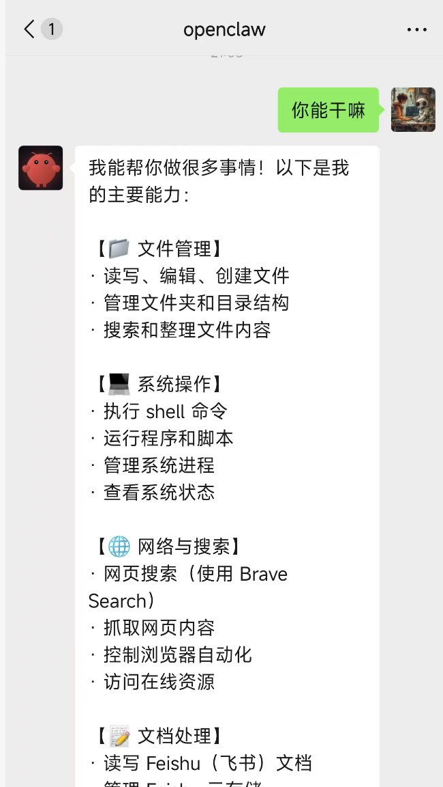
可以在微信中咨询它有关服务器的一切，当然也包含各种自动化任务
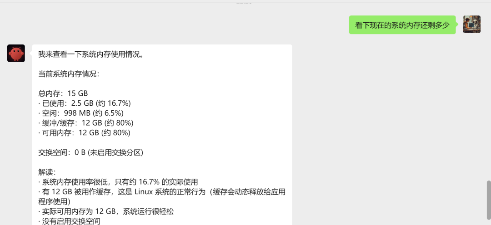
相比飞书，QQ，微信才是大家用得最多的社交APP。OpenClaw+微信可以说是天选组合。
而且这个接入方案，不用第三方协议，不用担心号没了，完全可以用自己的大号来玩。而且用同样的方法还可以接入企业微信
这个方案，OpenClaw必须要部署在公网服务器上，部署在本地不行，其实也不是不行，但要设置NAT穿越，比较复杂，所以不建议部署在本地。
废话不多说，直接上教程。
01
OpenClaw配置成公网
多数人使用OpenClaw的网页，其实都是用的本地局域网地址：127.0.0.1
但其实可以配置成服务器公网的地址。
如果你是在百度云厂商上搭建的，就不存在这个问题。这一步针对自己租服务器搭建的场景，比如我就是租的云服务器去部署openclaw
打开OpenClaw.json文件，需要修改如下几个选项
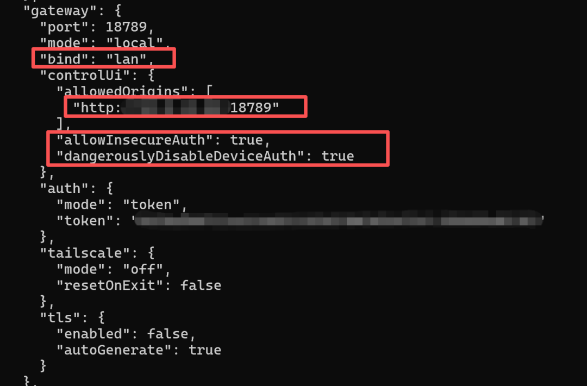
bind从loopback改成lan, 这样就从127.0.0.1变成使用公网IP。
增加controlUi选项，其中allowedOrigins配置你的公网IP。
allowInsecureAuth和dangerouslyDisableDeviceAuth设置为True, 这2个参数的意义是用HTTP的方式也能访问，不需要HTTPS。如果配置HTTPS的话，还的配置安全证书，比较麻烦
当然HTTP的方式的安全度不高，所以不要泄露自己的IP以及token。
配置完成后执行：openclaw gateway restart 重启生效
通过公网地址打开网页，状态显示Connected，就表示公网gateway地址是通的了。
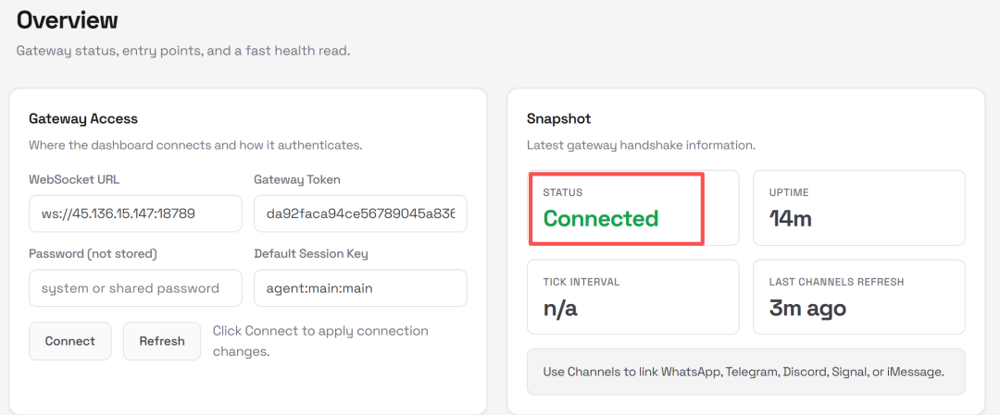
02
安装微信插件
openclaw的官方插件库中有一个微信插件，运行命令安装：
openclaw plugins install @openclaw-china/wecom-app
安装过程大概持续30几秒的样子
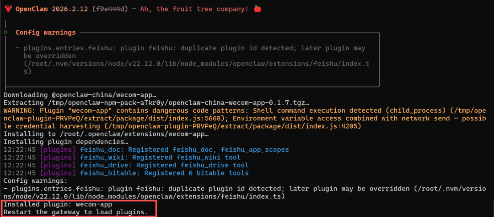
安装完成后，打开openclaw.json。在plugins中就可以看到wecom-app已经使能起来了
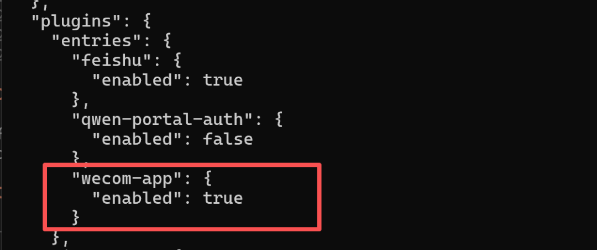
03
接入微信
接下来就是重头戏了，很多接入微信的方案都是通过IPAD，或者劫持协议来搞的，这种方案其实非常不安全，都只能用小号来玩玩
我本来是在研究把OpenClaw接入企业微信的，结果无意中发现在企业微信中有个微信插件。微信扫码后，就可以在微信中接受企业通知和使用企业应用
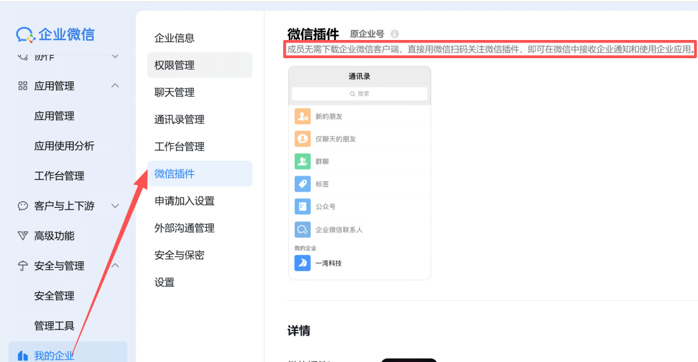
也就是说，只要我把企业微信中的应用和OpenClaw打通了，就可以借助微信插件把OpenClaw和微信打通。
这不就是在微信生态内合法合规的玩么，Perfect!
首先进入企业微信后台，点击应用管理->自建应用
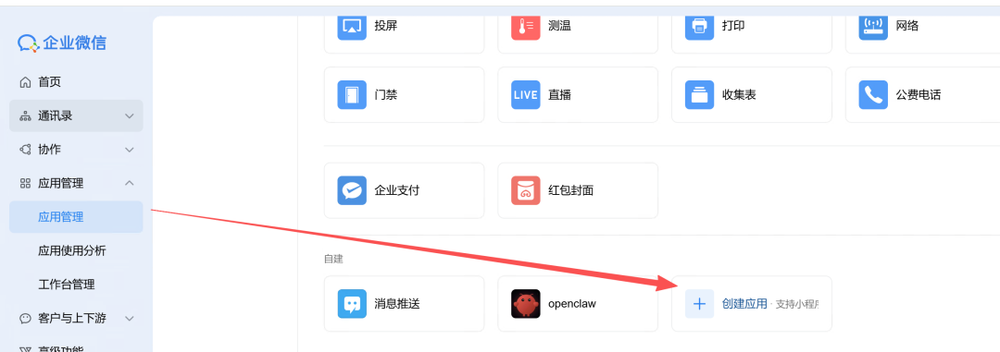
在应用中上传头像，我用的就是openclaw这个logo
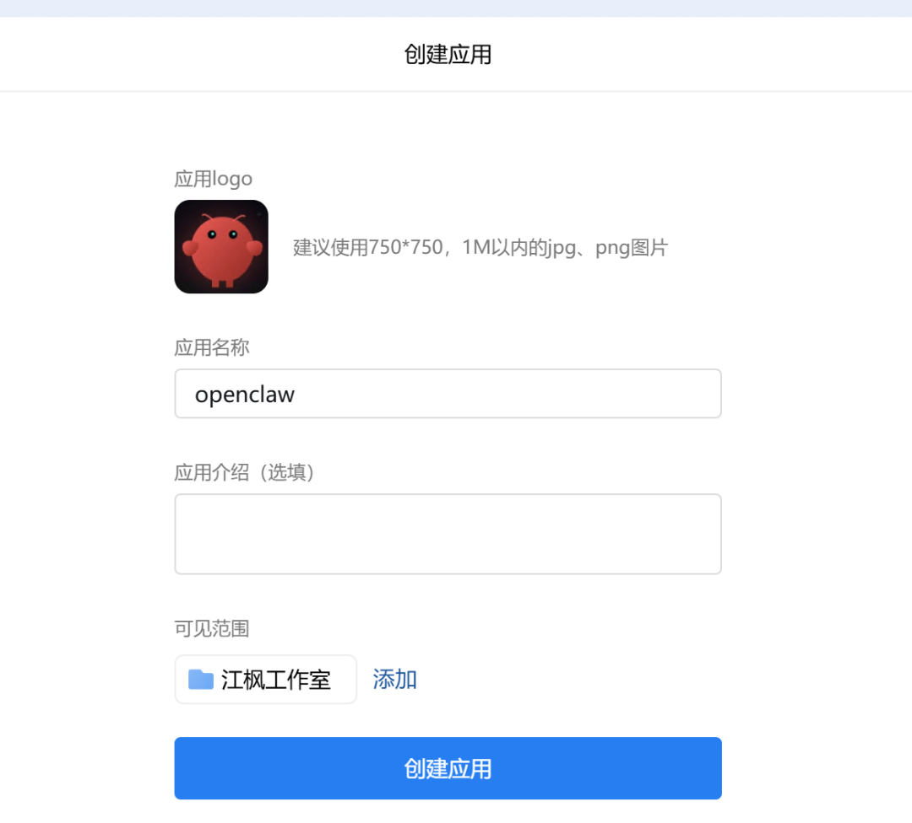
创建完成后，有2个值需要保存下来。分别是AgentID和Secret
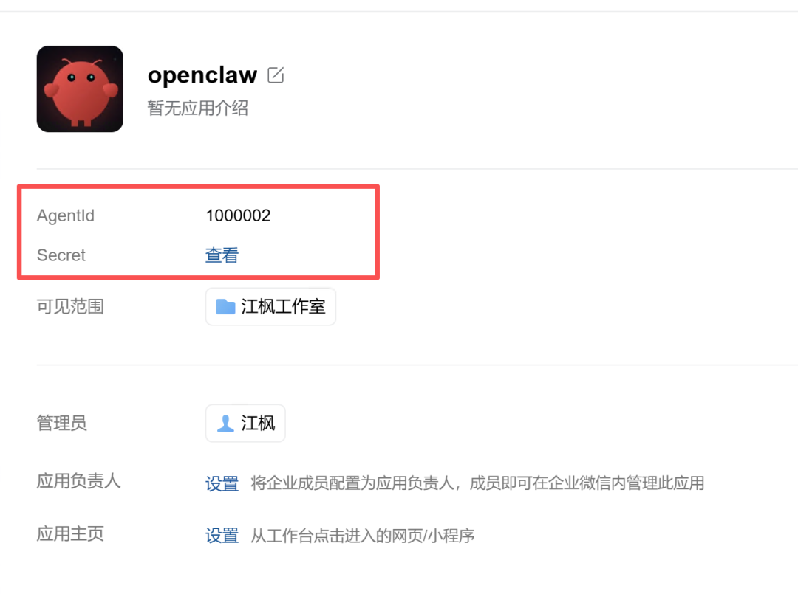
点击查看，系统会发送一条消息到企业微信查看
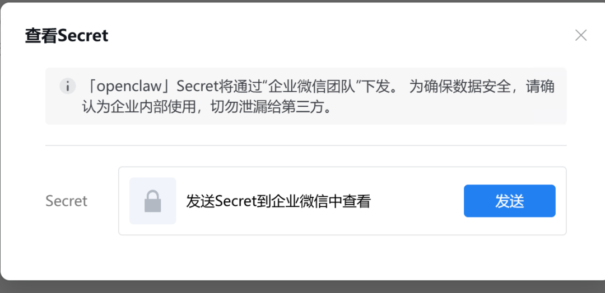
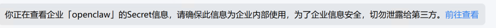
注意，Secret不要泄露出去，不然企业微信会有安全风险。这里先把Secret和AgentID保存下来
然后，在应用的接受消息中，点击API接受
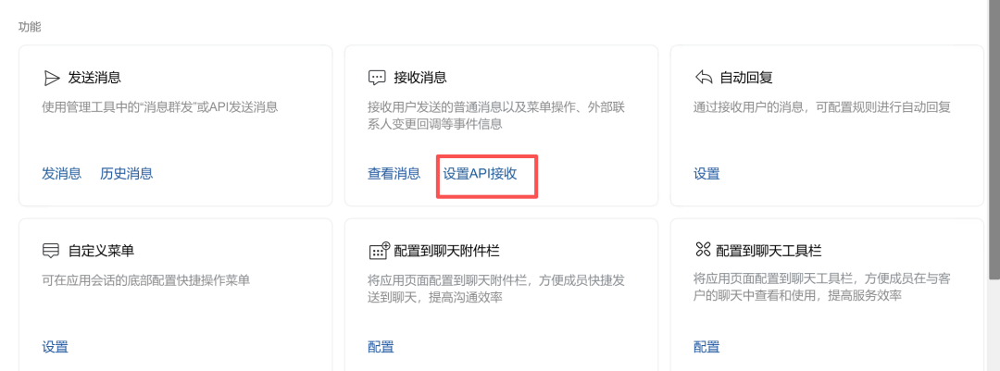
其中需要填到API回调URL。格式就是公网IP:端口/wecom/app
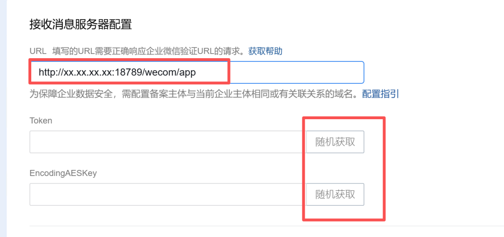
这里先暂时不配置，先点击下面的随机获取，得到token和ASEKey。先保存下来，后面会用到
最后，在公众号后台找到"我的企业"，找到企业ID。保存下来，后面配置需要
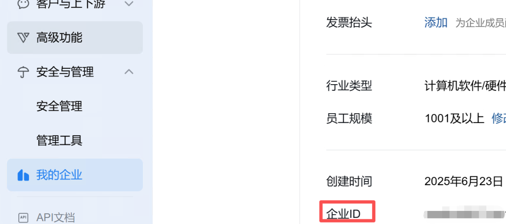
然后打开openclaw.json文件，在channel中配置wecom-app
按照如下格式配置，把前面获取的token，key, 企业ID,agentid分别填入
"wecom-app":
{
"enabled":true,
"webhookPath":"/wecom-app",
"token":"",
"encodingAESKey":"",
"corpId":"",
"corpSecret":"",
"agentId":""
}，
配置如下图, 直接copy进去即可。
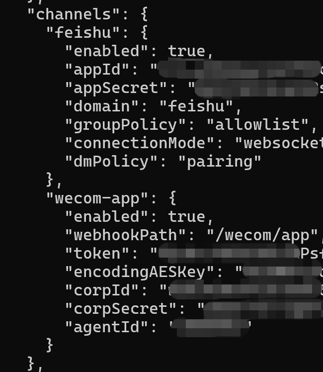
配置完成后，继续执行openclaw gateway restart命令重启。
没有报错的话，回到企业微信后台，在URL中填入回调地址，地址格式 公网IP:端口/wecom/app
比如你的公网IP是1.1.1.1。 那么这里就填入
http://1.1.1.1:18789/wecom/app
配置完成后，点击保存。没有任何报错的话，就说明API通道OK了
找到微信插件，上传logo，然后扫提供的二维码
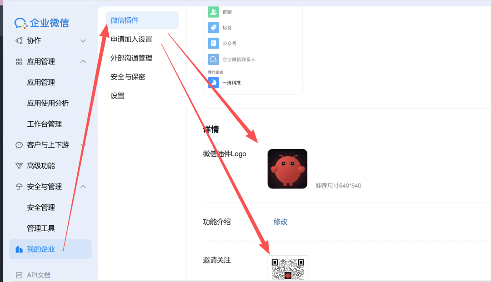
然后微信中就能找到这个应用了，你就可以在微信中和它对话指挥OpenClaw了
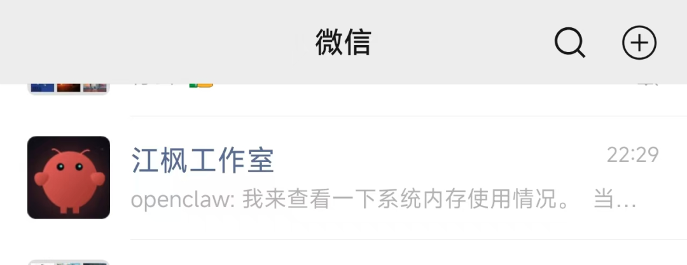
同样的这个应用也可以在企业微信中调用，也就是说同时打通了企业微信和微信，简直爽歪歪！
写在最后
这个方案可以说是一举两得，同时把openclaw接入了企业微信和微信。
但也有个不足之处，在微信中，这个机器人不能被加进群，只能单点聊。因为本质上它是个应用，而不是一个账号。
不过对于个人使用来说，已经非常方便了。部署有疑问的都可以找我交流：jiangfeng2066
如果觉得内容不错的话，请帮一键三连，转发给你的朋友
另外想第一时间收到推送，记得将公众号加个星标哦